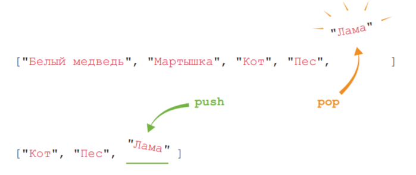

Вы
можете создать для каждого вида отдельную переменную:
Пользоваться этим списком не слишком удобно — у вас
есть девять переменных там, где можно обойтись лишь одной. А теперь
представьте, что животных в программе не девять, а 1000! Пришлось
бы создать 1000 отдельных переменных, работать с которыми было бы
решительно невозможно.
Это похоже на список покупок, составленный так, что каждая
покупка указана на отдельном листе бумаги. На одном листке написано
«яйца», на другом — «хлеб», на следующем — «апельсины». Большинство
людей предпочли бы видеть весь список на одном листе бумаги. Так
не проще ли сгруппировать всех динозавров в один список?
Вот для этого и нужны массивы.
let domesticAnimals = ["Кот", "Кролик", "Собака", "Лошадь", "Коза", "Овца", "Корова", "Свинья", "Корова"];
let domesticAnimals = ["Кот",
"Кролик",
"Собака",
"Лошадь",
"Коза",
"Овца",
"Корова",
"Свинья",
"Корова"]; Длинный список сложно читать, когда он записан одной строкой, но,
к счастью, это не единственный способ форматирования кода при создании массива. Вы можете поставить открывающую квадратную скобку
на одной строке, каждый элемент писать с новой строки и последней
строкой поставить закрывающую квадратную скобку:
Мы можем заменить элемент:
let myTopDomesticAnimals = ["Кот", "Кролик", "Лошадь"];
myTopDomesticAnimals[0] = "Корова"; // теперь ["Корова", "Кролик", "Лошадь"]
Добавить новый элемент:
let myTopDomesticAnimals = ["Кот", "Кролик", "Лошадь"];
myTopDomesticAnimals[3] = "Корова"; // теперь ["Кот", "Кролик", "Лошадь", "Корова"]
Можно добавить элемент с любым индексом:
let myTopDomesticAnimals = ["Кот", "Кролик", "Лошадь"];
myTopDomesticAnimals[30] = "Корова"; // теперь ["Кот", "Кролик", "Лошадь", undefined*27, "Корова"]
Элементы между индексами 3 и 30 получат значение undefined. При
печати массива Chrome сообщает количество этих undefi ned-элементов,
а не выводит каждый из них по отдельности.
Как получить слово "ласточка"?
let arraysInArray = [
13,
23,
"динозавры",
["трицератопс", "стегозавр", 3627.5],
100,
"годы жизни",
[true, "собака", "ласточка", 2004, "сбой"],
"улица",
["счастье - это осознанная жизнь", "радость", "успех1002"]];
Работаем с массивами
Свойства хранят
различные сведения о массиве, а методы обычно либо изменяют его,
либо возвращают новый массив.
Длина массива
let birds = ["соловей", "ласточка", "грач"];
birds[0] = "соловей";
birds[1] = "ласточка";
birds[2] = "грач";
birds.length; //3
birds[birds.length - 1]; //"грач"
Порой нужно знать, сколько в массиве элементов. Например, если снова
и снова добавлять животных в массив animals, вы можете забыть,
сколько их теперь всего.
Для этого есть свойство length (длина), хранящее количество элементов в массиве. Чтобы узнать длину массива, просто добавьте .length
после его имени. Чтобы узнать длину этого массива, добавим .length к birds:
JavaScript сообщает, что в массиве 3 элемента, и мы знаем, что их
индексы — 0, 1 и 2. Отсюда следует полезное наблюдение: последний
индекс массива всегда на единицу меньше длины этого массива. Это
значит, что есть простой способ получить последний элемент массива,
какой бы ни была его длина:
Добавить элемент в конец массива
.push
let animals = [];
animals.push("Кот"); //1
animals.push("Пес"); //2
animals.push("Кролик"); //3
animals; ["Кот", "Пес", "Кролик"]
animals.length; //3
Чтобы добавить элемент к концу массива, можно воспользоваться методом push.
Введите .push после имени массива, а после в круглых скобках укажите элемент, который нужно добавить:
Запуск метода в программировании называется вызовом метода. При вызове метода push происходят две вещи.
Во-первых, в массив добавляется элемент, указанный в скобках. Во-вторых, метод задает новую длину массива. Именно
эти значения длины появляются в консоли после каждого
вызова push.
Чтобы добавить элемент в начало массива, используйте
метод .unshift(элемент):
animals; //["Кот", "Пес", "Лама"]
animals[0]; //"Кот"
animals.unshift("Мартышка"); //4
animals; //["Мартышка", "Кот", "Пес", "Лама"]
animals.unshift("Белый медведь"); //5
animals; //["Белый медведь", "Мартышка", "Кот", "Пес", "Лама"]
animals[0]; //"Белый медведь"
animals[2]; //"Кот"
Мы начали с массива, созданного раньше, —
["Кот", "Пес", "Лама"]. Затем добавили в его
начало элементы "Мартышка" и "Белый медведь",
отчего остальные элементы сдвинулись вперед —
при каждом добавлении их индексы увеличивались
на 1. В результате элемент "Кот", у которого раньше
был индекс 0 , оказался под индексом 2 .
Как и push, метод unshift при каждом вызове
задает новую длину массива.
Удаление элементов с конца массива
.pop
animals; //["Белый медведь", "Мартышка", "Кот", "Пес", "Лама"]
let lastAnimal = animals.pop();
lastAnimal; //"Лама"
animals; //["Белый медведь", "Мартышка", "Кот", "Пес"]
animals.pop(); //"Пес"
animals; //["Белый медведь", "Мартышка", "Кот"]
animals.unshift(lastAnimal);
animals; //["Лама", "Белый медведь", "Мартышка", "Кот"]
Убрать из массива последний элемент можно, добавив к его имени
.pop(). Метод pop делает сразу два дела: удаляет последний элемент
из массива и возвращает этот элемент в виде значения. Для примера
начнем с нашего массива animals ["Белый медведь", "Мартышка",
"Кот", "Пес", "Лама"]. Далее создадим новую переменную lastAnimal
и сохраним в ней последний элемент, вызвав animals.pop().

Метод pop(удалить) из массива animal, был занесен в переменную lastAnimal,
поскольку 'Лама' была сохранена в переменной, то при необходимости мы ее смогжем добавить снова в массив, что и было сделано.
Методы push и pop хорошо друг друга дополняют, поскольку порой
нужно работать только с концом массива. Вы можете добавить элемент
в конец вызовом push, а потом, когда это понадобится, забрать его оттуда
вызовом pop. Мы рассмотрим это на примере чуть позже в этой главе.
Поход к другу
let landmarks = [];
landmarks.push("Мой дом");
landmarks.push("Дорожка к дому");
landmarks.push("Моя бывшая школа");
landmarks.push("Магазин");
landmarks.push("Яблоневый сад");
landmarks.push("Подземный переход");
landmarks.push("Кафе");
landmarks.push("Желтый забор");
landmarks.push("Дом друга");
Представьте, что вы идете в гости к другу, у которого частный дом и вы у него никогда не бывали.
Телефон разрядился, но друг вам заранее рассказал примерный путь, вы сомневаетесь сможете ли вы вернуться домой.
Поэтому решили записывать на листок возможные ориентиры (магазин, здание и т.д.). А по дороге домой вы будете вычеркивать с конца эти ориентиры.
Возвращение домой
landmarks.pop(); //"Дом друга"
landmarks.pop(); //"Желтый забор"
landmarks.pop(); //"Кафе"
landmarks.pop(); //"Подземный переход"
landmarks.pop(); //"Яблоневый сад"
landmarks.pop(); //"Магазин"
landmarks.pop(); //"Моя бывшая школа"
landmarks.pop(); //"Дорожка к дому"
landmarks.pop(); //"Мой дом"
Заметили, что первый ориентир, который вы поместили
в массив методом push, оказался также последним, который
вы извлекли методом pop? А последний добавленный ориентир
оказался первым извлеченным? Такой подход нередко используется в больших программах — именно поэтому push и pop в JavaScript всегда под
рукой.
LIFO (last in, first out)
стек - «последним вошел, первым вышел»
такой способ работы с элементами называется «стек». Представьте, что стек — это стопка блинов. Всякий
раз, когда готов новый блин, его кладут сверху стопки (как метод
push), и, когда вы берете блин, чтобы его съесть, вы тоже берете
его сверху (как метод pop). Снятие элементов со стека похоже
на путешествие назад во времени: последним изымается элемент, который был в стеке первым. То же происходит с блинами:
последний блин, который вы съедите, — это первый, который был
приготовлен
shift()/unshift()
animals; //["Лама", "Белый медведь", "Мартышка", "Кот"]
let firstAnimal = animals.shift();
firstAnimal; //"Лама"
animals; //["Белый медведь", "Мартышка", "Кот"]Убрать из массива последний элемент можно, добавив к его имени
.pop(). Метод pop делает сразу два дела: удаляет последний элемент
из массива и возвращает этот элемент в виде значения. Для примера
начнем с нашего массива animals ["Белый медведь", "Мартышка",
"Кот", "Пес", "Лама"]. Далее создадим новую переменную lastAnimal
и сохраним в ней последний элемент, вызвав animals.pop().
Методы unshift и shift добавляют и удаляют элементы с начала
массива — так же как push и pop добавляют и удаляют элементы с конца.
Методы unshift и shift добавляют и удаляют элементы с начала
массива — так же как push и pop добавляют и удаляют элементы с конца.
FIFO (first in, first out)
очередь - «первый вошел, первый вышел»
Есть и альтернативный подход — «первым вошел,
первым вышел», аббревиатура FIFO (fi rst in, first out). Его также
называют очередью, поскольку таким же образом устроены очереди — первый человек, вставший в очередь, будет первым, которого обслужат.
Методы push/pop выполняются быстро, а методы shift/unshift – медленно. Why? (В конце массива меняется только один элемент массива, а в начале нужно поменять индекс у всех остальных элементов в массиве
Объединение массивов
firstArray.concat (otherArray)
let furryAnimals = ["Альпака", "Лемур", "Йети"];
let scalyAnimals = ["Удав", "Анаконда"];
let furryAndScalyAnimals = furryAnimals.concat(scalyAnimals);
furryAndScalyAnimals; //["Альпака", "Лемур", "Йети", "Удав", "Анаконда"]
furryAnimals; //["Альпака", "Лемур", "Йети"]
scalyAnimals; //["Удав", "Анаконда"]
Чтобы «склеить» два массива, создав таким образом
новый массив, используйте команду firstArray.
concat(otherArray). Метод concat создает массив, в котором элементы из firstArray будут расположены перед элементами из otherArray.
Хоть команда firstArray.concat(otherArray) и возвращает массив, содержащий все элементы из firstArray и otherArray, сами эти
массивы остаются прежними. Запросив содержимое furryAnimals
и scalyAnimals, мы видим, что массивы не изменились.
Объединение нескольких массивов
let furryAnimals = ["Альпака", "Лемур", "Йети"];
let scalyAnimals = ["Удав", "Анаконда"];
let featheredAnimals = ["Ара", "Додо"];
let allAnimals = furryAnimals.concat(scalyAnimals, featheredAnimals);
allAnimals; //["Альпака", "Кольцехвостый лемур", "Йети", "Удав", "Анаконда", "Ара", "Додо"]С помощью concat можно объединить больше чем два массива. Для этого
укажите дополнительные массивы в скобках, разделив их запятыми:
Мы видим, что пернатые животные из массива featheredAnimals
оказались в самом конце нового массива, поскольку featheredAnimals
был указан последним в скобках метода concat.
slice
arr.slice([start], [end])
возвращает новый массив, в который копирует элементы, начиная с индекса start и до end (не включая end). Оба индекса start и end могут быть отрицательными.
let arr = ["t", "e", "s", "t"];
alert( arr.slice(1, 3) ); // e,s (копирует с 1 до 3)
alert( arr.slice(-2) ); // s,t (копирует с -2 до конца) В таком случае отсчёт будет осуществляться с конца массива.
Это похоже на строковый метод str.slice, но вместо подстрок возвращает подмассивы.
Можно вызвать slice и вообще без аргументов: arr.slice() создаёт копию массива arr. Это часто используют, чтобы создать копию массива для дальнейших преобразований, которые не должны менять исходный массив.
splice
arr.splice(index[, deleteCount, elem1, ..., elemN])
Он начинает с позиции index, удаляет deleteCount элементов и вставляет elem1, ..., elemN на их место.
Возвращает массив из удалённых элементов.
let arr = ["Я", "сейчас", "изучаю", "JavaScript"];
arr.splice(1, 1); // начиная с позиции 1, удалить 1 элемент
alert( arr ); // осталось ["Я", "изучаю", "JavaScript"]
Удалим 3 элемента и заменим их двумя другими.
let arr = ["Я", "изучаю", "JavaScript", "прямо", "сейчас"];
// удалить 3 первых элемента и заменить их другими
arr.splice(0, 3, "Давай", "танцевать");
alert( arr ) // теперь ["Давай", "танцевать", "прямо", "сейчас"]Сохраним, удаленные элементы в переменную
let arr = ["Я", "изучаю", "JavaScript", "прямо", "сейчас"];
// удалить 2 первых элемента
let removed = arr.splice(0, 2);
alert( removed ); // "Я", "изучаю" <-- массив из удалённых элементов
Метод splice может вставлять элементы без удаления, для этого нужно установить deleteCount в 0:
let arr = ["Я", "изучаю", "JavaScript"];
// с позиции 2
// удалить 0 элементов
// вставить "сложный", "язык"
arr.splice(2, 0, "сложный", "язык");
alert( arr ); // "Я", "изучаю", "сложный", "язык", "JavaScript"Допускается использование отрицательного индекса.
let arr = [1, 2, 5];
// начиная с индекса -1 (перед последним элементом)
// удалить 0 элементов,
// затем вставить числа 3 и 4
arr.splice(-1, 0, 3, 4);
alert( arr ); // 1,2,3,4,5
Метод arr.forEach позволяет запускать функцию для каждого элемента массива.
arr.forEach(function(item, index, array) {
// ... делать что-то с item
});
["мороженое", "массаж", "учиться новому", "книги"].forEach(alert);forEach просто перебирает массив как цикл for, ничего не изменяя
Результат функции (если она вообще что-то возвращает) отбрасывается и игнорируется.
Поиск индекса элемента в массиве
.indexOf("элемент")
arr.lastIndexOf(item, from) – то же самое, но ищет справа налево.
let colors = ["красный", "зеленый", "синий"];
colors.indexOf("синий"); //2
colors.indexOf("зеленый"); //1
colors.indexOf("фиолетовый"); //-1, поскольку такого элемента нет в массиве
let insects = ["Пчела", "Муравей", "Пчела", "Пчела", "Муравей"];
insects.indexOf("Пчела"); //0
arr.includes(item, from)
ищет item, начиная с индекса from, и возвращает true, если поиск успешен
let arr = [1, 0, false];
alert( arr.includes(1) ); // true
const arr = [NaN];
alert( arr.indexOf(NaN) ); // -1 (должен быть 0, но === проверка на равенство не работает для NaN)
alert( arr.includes(NaN) );// true (верно)
Если мы хотим проверить наличие элемента, и нет необходимости знать его точный индекс, тогда предпочтительным является arr.includes.
Кроме того, очень незначительным отличием includes является то, что он правильно обрабатывает NaN в отличие от indexOf/lastIndexOf:
find и findIndex
let result = arr.find(function(item, index, array) {
// если true - возвращается текущий элемент и перебор прерывается
// если все итерации оказались ложными, возвращается undefined
});
let users = [
{id: 1, name: "Вася"},
{id: 2, name: "Петя"},
{id: 3, name: "Маша"}
];
let user = users.find(item => item.id == 1);
alert(user.name); // Вася
есть массив объектов. Как нам найти объект с определённым условием?
Если функция возвращает true, поиск прерывается и возвращается item. Если ничего не найдено, возвращается undefined.
Например, у нас есть массив пользователей, каждый из которых имеет поля id и name. Попробуем найти того, кто с id == 1:
Метод arr.findIndex – по сути, то же самое, но возвращает индекс, на котором был найден элемент, а не сам элемент, и -1, если ничего не найдено.
filter
let results = arr.filter(function(item, index, array) {
// если true - элемент добавляется к результату, и перебор продолжается
// возвращается пустой массив в случае, если ничего не найдено
});
let users = [
{id: 1, name: "Вася"},
{id: 2, name: "Петя"},
{id: 3, name: "Маша"}
];
let someUsers = users.filter(item => item.id < 3);
alert(someUsers.length); // 2
Синтаксис этого метода схож с find, но filter возвращает массив из всех подходящих элементов:
Превращаем массив в строку
массив.join("разделитель")
let boringAnimals = ["Мартышка", "Кот", "Рыба", "Ящерица"];
boringAnimals.join(); //"Мартышка,Кот,Рыба,Ящерица"
let boringAnimals = ["Мартышка", "Кот", "Рыба", "Ящерица"];
boringAnimals.join(" - "); //"Мартышка - Кот - Рыба - Ящерица"
boringAnimals.join(" "); // "Мартышка Кот Рыба Ящерица"
boringAnimals.join(" и "); //"Мартышка и Кот и Рыба и Ящерица"
let ages = [11, 14, 79];
ages.join(" "); //"11 14 79"Метод join возвращает строку, в которой через запятую перечислены все элементы массива boringAnimals
Если же в массиве хранятся нестроковые значения, JavaScript преобразует их в строки перед тем, как соединить:
строка.split("разделитель")
split разбивает строку на массив по заданному разделителю
let names = 'Вася, Петя, Маша';
let arr = names.split(', ');
let arr = 'Вася, Петя, Маша, Саша'.split(', ', 2);
console.log(arr); // Вася, Петя
let str = "тест";
alert( str.split('') ); // т,е,с,т
split разбивает строку на массив по заданному разделителю
В примере таким разделителем является строка из запятой и пробела.
У метода split есть необязательный второй числовой аргумент – ограничение на количество элементов в массиве. Если их больше, чем указано, то остаток массива будет отброшен.
На практике это редко используется:
Вызов split(s) с пустым аргументом s разбил бы строку на массив букв:
reverse
Метод array.reverse меняет порядок элементов в array на обратный.
let numbers = [1, 2, 3, 4, 5];
numbers.reverse();
alert(numbers); // 5,4,3,2,1
map
let result = arr.map(function(item, index, array) {
// возвращается новое значение вместо элемента
});
Вызывает функцию для каждого элемента массива и возвращает массив результатов выполнения этой функции.
let lengths = ["Золушка", "Ариэль", "Моана"].map(item => item.length);
alert(lengths); // 7,6,5
Метод arr.map является одним из наиболее полезных и часто используемых.
sort(fn)
Вызов arr.sort() сортирует массив на месте, меняя в нём порядок элементов.
let arr = [ 1, 2, 15 ];
// метод сортирует содержимое arr
arr.sort();
alert( arr ); // 1, 15, 2
let arr = [ 1, 2, 15 ];
arr.sort(function(a, b) { return a - b; });
alert(arr); // 1, 2, 15
arr.sort( (a, b) => a - b );
Он возвращает отсортированный массив, но обычно возвращаемое значение игнорируется, так как изменяется сам массив.Заметили ошибку? По умолчанию элементы сортируются как строки.
Буквально, элементы преобразуются в строки при сравнении. Для строк применяется лексикографический порядок, и действительно выходит, что "2" > "15".
Чтобы использовать наш собственный порядок сортировки, нам нужно предоставить функцию в качестве аргумента arr.sort().
reduce/reduceRight
let value = arr.reduce(function(previousValue, item, index, array) {
// ...
}, [initial]);
Используются для вычисления какого-нибудь единого значения на основе всего массива.
Функция применяется по очереди ко всем элементам массива и «переносит» свой результат на следующий вызов.
При вызове функции результат её вызова на предыдущем элементе массива передаётся как первый аргумент.
Звучит сложновато, но всё становится проще, если думать о первом аргументе как «аккумулирующем» результат предыдущих вызовов функции. По окончании он становится результатом reduce.
Этот метод проще всего понять на примере.
Аргументы:
previousValue – результат предыдущего вызова этой функции,
item – очередной элемент массива,
index – его индекс,
array – сам массив.
let arr = [1, 2, 3, 4, 5];
let result = arr.reduce((sum, current) => sum + current, 0);
alert(result); // 15
Давайте детальнее разберём, как он работает.
При первом запуске sum равен initial (последний аргумент reduce), то есть 0, а current – первый элемент массива, равный 1. Таким образом, результат функции равен 1.
При втором запуске sum = 1, и к нему мы добавляем второй элемент массива (2).
При третьем запуске sum = 3, к которому мы добавляем следующий элемент, и так далее…
Метод arr.reduceRight работает аналогично, но проходит по массиву справа налево.
Array.isArray
Массивы не образуют отдельный тип языка. Они основаны на объектах.
Поэтому typeof не может отличить простой объект от массива:
alert(typeof {}); // object
alert(typeof []); // тоже object
alert(Array.isArray({})); // false
alert(Array.isArray([])); // true
Но массивы используются настолько часто, что для этого придумали специальный метод: Array.isArray(value). Он возвращает true, если массив, и false, если нет.